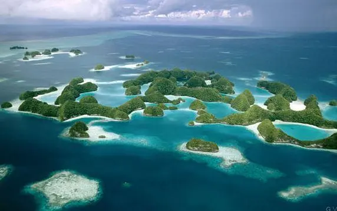
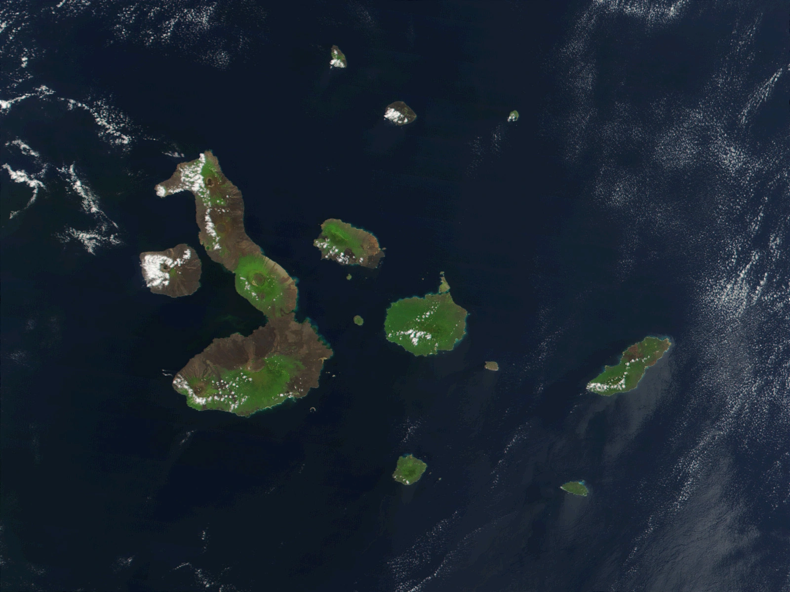

-

Islas e Islotes
El Archipiélago esta conformado por 13 grandes islas volcánicas, 6 islas más pequeñas y 107 rocas e islotes. Cada una de ellas tiene su propia flora y fauna, si bien hay animales que se pueden encontrar en todas las islas, hay especies que pueden ser únicas de cada isla.
Las Islas Galápagos son consideradas como una de las zonas volcánicas más activas del mundo, todas las islas son de origen volcánico y por lo menos en 8 de ellas sus volcanes han manifestado una intensa actividad durante el período histórico, especialmente en los volcanes de las islas Isabela y Fernandina.
Las frecuentes erupciones de los volcanes de Galápagos, por lo menos unas sesenta en el período histórico, se caracterizan por una actividad de tipo efusiva con la generación de grandes flujos de lava basáltica que se generan al interior de las calderas o a partir de extensas fisuras localizadas en los flancos de los volcanes, en muchos casos llegando hasta el mar.
-
Fauna
Más detalle...Los animales de Galápagos son únicos en el mundo, esto se debe al medio ambiente que los rodea. Esta exótica vida salvaje solo puede ser admirada en este grupo particular de Islas encantadas.
La fauna de Galápagos tiene sus ancestros en el continente y tuvieron un proceso evolutivo de aproximadamente 4 millones de años. Entre las especies endémicas se pueden mencionar los petreles, los cormoranes, el gavilán de Galápagos, los pingüinos, las iguanas terrestres, marinas y muchas más.
Las especies o categorías de fauna que se pueden encontrar en Galápagos son mamíferos, aves, reptiles, peces e invertebrados marinos.
-

Flora
Más detalle...Considerada como un extraordinario ejemplo de la increíble evolución biológica, no solo que hay muchas especies que son endémicas a las islas Galapagos, sino que éstas mismas plantas son el medio de supervivencia para muchas especies de mar.
También conocido como el "laboratorio viviente", en las Islas Galápagos se siguen descubriendo nuevas especies y realizando hallazgos sorprendentes en las características de la flora y fauna que componen sus ecosistemas.
En las islas habitadas, esta es tierra muy productiva dedicada a actividades agrícolas. Sorpresivamente, la temperatura no sube mucho, y abundan las hierbas y pastos, dando inclusive oportunidad de crianza de ganado.
-

Reconocimientos
- 1979, la UNESCO declaró a las Islas Galápagos Patrimonio Natural de la Humanidad
- 1985, la UNESCO declaró a las Islas Galápagos Reserva de la Biósfera
- 1986, el Gobierno del Ecuador crea la Reserva de Recursos Marinos de Galápagos
- 1990, las Islas son declaradas un Santuario de Ballenas
- 1998, se decreta la Reserva Marina de Galápagos
- 2001, la UNESCO incluye a la Reserva Marina de Galápagos en la lista de Patrimonios Naturales de la Humanidad